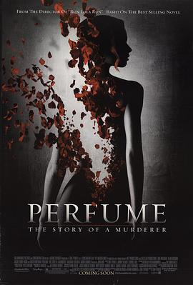

香水 / Perfume: The Story of a Murderer
又名：香水：一个杀人犯的故事 / 香水：一个谋杀犯的故事 / 香水：杀手的故事 / 杀手故事 / Das Parfum - Die Geschichte eines Mörders
不愧是豆瓣top 250，真的是精彩！！完全无法预测的剧情：Perfume.The.Story.of.A.Murderer.2006.1080p.BluRay.x264.DD5.1-FGT
作品信息
| 导演 | 汤姆·提克威 |
| 编剧 | 安德鲁·伯金 / 贝尔恩德·艾辛格 / 汤姆·提克威 / 帕特里克·聚斯金德 |
| 主演 | 本·卫肖 / 艾伦·瑞克曼 / 蕾切尔·哈伍德 / 达斯汀·霍夫曼 / 大卫·卡尔德 / 比吉特·米尼希迈尔 / 卡洛斯·格拉马赫 / 西恩·托马斯 / 佩里·米尔沃德 / 山姆·道格拉斯 / 卡洛琳·赫弗斯 / 卡罗丽娜·维拉·斯克利亚 / 莎拉·弗里斯蒂 / 科琳娜·哈弗奇 / 杰西卡·施瓦茨 / 约翰·赫特 / 拉蒙·普霍尔 |
| 类型 | 剧情 / 犯罪 / 奇幻 |
| 制片国家/地区 | 德国 / 法国 / 西班牙 / 美国 / 比利时 |
| 语言 | 英语 |
| 上映日期 | 2006-09-07(德国) / 2006-09-14(法国) / 2006-11-24(西班牙) / 2007-01-05(美国) |
| 片长 | 147分钟 |
| IMDb | tt0396171 |
说过什么
2018-03-02 18:36:24
广播 · 看过 · ★★★★★
不愧是豆瓣top 250，真的是精彩！！完全无法预测的剧情：Perfume.The.Story.of.A.Murderer.2006.1080p.BluRay.x264.DD5.1-FGT
最后一次看到是 2026-08-01T11:06:06+10:00 · 豆瓣原页